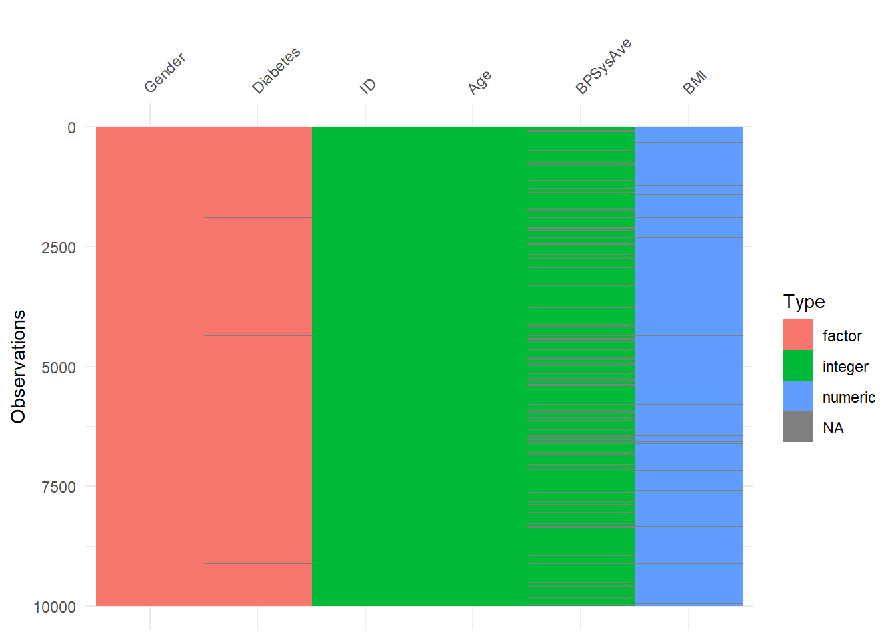

Data preprocessing is a cornerstone of any data analysis or machine learning pipeline. Raw data rarely comes in a form ready for direct analysis — it often requires cleaning, transformation, normalization, and careful handling of anomalies. Among these preprocessing tasks, dealing with missing data stands out as one of the most critical and unavoidable challenges.
Missing values appear in virtually every domain: surveys may have skipped questions, administrative registers might contain incomplete records, and clinical trials can suffer from dropout patients. Ignoring these gaps or handling them naively does not just reduce the amount of usable information; it can also introduce bias, decrease statistical power, and ultimately compromise the validity of conclusions. In other words, missing data is not just an inconvenience — it is a methodological problem that demands rigorous attention.
In statistical practice, missingness is often represented as NA (Not Available) in R. However, not all missing values are created equal. Some are missing completely at random, others depend on observed variables, and in some cases, the missingness itself carries meaningful information. Understanding these mechanisms is essential before deciding how to address them. This makes missing data imputation a fundamental part of the broader data preprocessing workflow, alongside tasks such as outlier detection, data normalization, and feature engineering.
In this article, we will cover:
The theoretical foundations of missing data mechanisms (MCAR, MAR, MNAR).
How to detect and visualize missing values in R.
Different strategies for handling missingness, from simple imputation to advanced multiple imputation techniques.
A practical workflow using the NHANES dataset, widely used in health research, to demonstrate methods in R.
Best practices, pitfalls, and recommendations for applied data science.
We will use several R packages throughout this tutorial:
tidyverse: Data wrangling and visualization
naniar and VIM: Tools for exploring and visualizing missing data
mice: Multiple imputation by chained equations
missForest: Random forest–based imputation for nonlinear data
By integrating missing data handling into the larger context of preprocessing, this structured approach will not only help you manage incomplete datasets effectively but also ensure that your entire analytical workflow remains robust, transparent, and reliable.
2 NHANES Dataset
In this section, we will work with the NHANES dataset, which comes from the US National Health and Nutrition Examination Survey.
The dataset includes demographic, examination, and laboratory data collected from thousands of individuals.
Since the full dataset is quite large, we will focus only on a subset of variables that are relevant for preprocessing examples.
Here are the variables we will use:
ID: Unique identifier for each participant
Age: Age of the participant
Gender: Biological sex (male or female)
BMI: Body Mass Index
BPSysAve: Average systolic blood pressure
Diabetes: Whether the participant has been diagnosed with diabetes
Before diving into preprocessing, let’s take a quick look at the structure of these selected variables:
Rows: 10,000
Columns: 6
$ ID <int> 51624, 51624, 51624, 51625, 51630, 51638, 51646, 51647, 51647…
$ Age <int> 34, 34, 34, 4, 49, 9, 8, 45, 45, 45, 66, 58, 54, 10, 58, 50, …
$ Gender <fct> male, male, male, male, female, male, male, female, female, f…
$ BMI <dbl> 32.22, 32.22, 32.22, 15.30, 30.57, 16.82, 20.64, 27.24, 27.24…
$ BPSysAve <int> 113, 113, 113, NA, 112, 86, 107, 118, 118, 118, 111, 104, 134…
$ Diabetes <fct> No, No, No, No, No, No, No, No, No, No, No, No, No, No, No, N…
3 Why Missingness Matters
Missing data is not just an inconvenience — it can distort the statistical conclusions we draw from a dataset.
There are several critical reasons why handling missingness properly is essential:
Biased results: If the missing values are not random, analyses may systematically misrepresent the population.
Model incompatibility: Many modeling techniques in R (e.g., lm(), glm()) require complete data, and will automatically drop cases with missing values, sometimes silently.
3.1 A Short Case Example: BMI Missingness and Blood Pressure
Suppose we want to explore how Body Mass Index (BMI) relates to Systolic Blood Pressure (BPSysAve).
However, BMI contains missing values. If we ignore them and only analyze complete cases, we may end up with biased conclusions.
# How many missing in BMI?sum(is.na(nhanes_sub$BMI))
nrow(nhanes_complete) # after dropping missing BMI
[1] 9634
We see that a substantial portion of the data is dropped when we remove missing BMI values. This reduction not only decreases efficiency but can also bias the estimates if those missing values are not randomly distributed.
# Fit regression with complete cases onlymodel_complete <-lm(BPSysAve ~ BMI + Age + Gender, data = nhanes_complete)summary(model_complete)
Call:
lm(formula = BPSysAve ~ BMI + Age + Gender, data = nhanes_complete)
Residuals:
Min 1Q Median 3Q Max
-56.281 -8.652 -0.955 7.560 102.790
Coefficients:
Estimate Std. Error t value Pr(>|t|)
(Intercept) 90.016503 0.677618 132.84 <2e-16 ***
BMI 0.328076 0.023228 14.12 <2e-16 ***
Age 0.412758 0.008076 51.11 <2e-16 ***
Gendermale 4.346847 0.313476 13.87 <2e-16 ***
---
Signif. codes: 0 '***' 0.001 '**' 0.01 '*' 0.05 '.' 0.1 ' ' 1
Residual standard error: 14.43 on 8483 degrees of freedom
(1147 observations deleted due to missingness)
Multiple R-squared: 0.2969, Adjusted R-squared: 0.2966
F-statistic: 1194 on 3 and 8483 DF, p-value: < 2.2e-16
Interpretation:
The model only uses complete cases, ignoring potentially informative missingness.
If BMI is more often missing in certain subgroups (e.g., older adults or females), then the relationship estimated here does not represent the whole population.
In later sections, we will see how different imputation strategies can mitigate this problem.
4 Missing Data Mechanisms
One of the most crucial aspects of handling missing data is to understand why the data are missing.
The mechanism behind missingness determines whether our chosen method will yield unbiased and efficient estimates.
4.1 Types of Missing Data Mechanisms
MCAR (Missing Completely At Random)
The probability of a value being missing does not depend on either the observed or the unobserved data.
→ Example: A lab machine randomly fails for some patients, regardless of their characteristics.
→ Implication: Complete-case analysis is valid (though less efficient).
MAR (Missing At Random)
The probability of missingness depends only on the observed data, not on the missing values themselves.
→ Example: People with lower income are less likely to report their weight, but we observe income.
→ Implication: Multiple imputation or likelihood-based methods can recover unbiased estimates.
MNAR (Missing Not At Random)
The probability of missingness depends on the unobserved value itself.
→ Example: People with higher BMI are less likely to report their weight.
→ Implication: Strong assumptions or external information are needed; imputation under MAR will still be biased.
4.2 What each mechanism implies (with NHANES intuition)
MCAR — e.g., random device failure that occasionally prevents recording BMI. Implication: Complete-case analysis (dropping rows) is unbiased but wastes data.
MAR — e.g., BMI missingness varies by observed Age or Gender. Implication: Likelihood-based methods or Multiple Imputation (MI) are valid if those predictors are in the imputation model.
MNAR — e.g., people with very high BMI systematically do not report it. Implication: MAR-based methods still biased; requires sensitivity analysis or explicit MNAR models.
4.3 Quick NHANES checks that suggest a mechanism
Below we do two simple diagnostics on our working subset nhanes_sub
(defined earlier as: NHANES |> select(ID, Age, Gender, BMI, BPSysAve, Diabetes)).
Little’s MCAR test is a statistical procedure used to examine whether data are Missing Completely at Random (MCAR).
⚠️ However, this test comes with important caveats:
- It can be overly sensitive in large samples, flagging trivial deviations.
- In small samples, its power is often too low to detect meaningful departures from MCAR.
Because of these limitations, it should be treated only as a supporting tool rather than a definitive test when diagnosing missingness mechanisms.
5 Detecting Missing Data
Before applying any imputation or modeling technique, it is essential to explore the extent and structure of missingness in the dataset. The nhanes_sub data frame, derived from the NHANES dataset, will be used for illustration.
5.1 Simple Counts and Summaries
The first step is to quantify how many values are missing per variable.
# Count missing values for each variablenhanes_sub %>%summarise(across(everything(), ~sum(is.na(.))))
# A tibble: 1 × 6
ID Age Gender BMI BPSysAve Diabetes
<int> <int> <int> <int> <int> <int>
1 0 0 0 366 1449 142
The output shows the number of missing values in each column, making it easy to spot problematic variables. Another quick check is to identify how many complete vs. incomplete cases exist:
sum(complete.cases(nhanes_sub)) # number of complete rows
[1] 8482
sum(!complete.cases(nhanes_sub)) # number of incomplete rows
[1] 1518
This gives us an idea of the proportion of observations that would be lost if we opted for listwise deletion.
5.2 Visualizing Missingness
Textual summaries are informative, but missing data often has patterns that are better revealed visually. Several R packages support this task:
5.2.1naniar
library(naniar)library(ggplot2)# Visualize missing values by variablegg_miss_var(nhanes_sub, show_pct =TRUE) +labs(title ="Missing Values by Variable in NHANES Subset",x ="Variables",y ="Proportion of Missing Values")
Each bar corresponds to a variable.
The height of the bar shows how many observations are missing for that variable.
With show_pct = TRUE, the proportion of missing values is also displayed, making it easier to compare across variables.
Variables with tall bars clearly have higher missingness (e.g., BMI or blood pressure variables often stand out in this dataset).
Variables sorted by number of missings:
Variable Count
BPSysAve 1449
BMI 366
Diabetes 142
ID 0
Age 0
Gender 0
This aggregated visualization shows the proportion of missing values per variable and the combinations of missingness across variables.
5.2.3visdat
library(visdat)vis_dat(nhanes_sub)

This function displays the data type of each variable and overlays missingness, helping to identify whether missing values cluster in certain variable types (e.g., numeric vs. categorical).
5.3 Interpreting the Patterns
Random scatter of missing values across rows/columns may indicate MCAR (though formal testing is required).
Systematic patterns (e.g., older participants more likely to have missing BMI) hint at MAR.
Blocks of missingness (entire variables missing for subgroups) may suggest MNAR or structural missingness.
6 Handling Missing Data — Methods
In this section we review the main families of methods, show when each is appropriate, and demonstrate them on nhanes_sub. We will explicitly call out the trade-offs so readers can choose deliberately—not by habit.
6.1 Deletion
Listwise deletion (complete-case) removes any row that contains at least one missing value. Pairwise deletion uses all available pairs to compute correlations/covariances, which can later lead to non–positive-definite covariance matrices and failures in modeling.
Pros - Simple; widely implemented by default (often silently). - Unbiased only under MCAR.
Cons - Wastes data; reduces power. - Biased under MAR/MNAR; can change the sample composition.
# How many rows would we lose if we required complete cases for these variables?n_total <-nrow(nhanes_sub)n_cc <- nhanes_sub |> stats::complete.cases() |>sum()cbind(total_rows = n_total,complete_cases= n_cc,lost_rows = n_total - n_cc,lost_pct =round((n_total - n_cc) / n_total *100, 1))
Interpretation: If the lost percentage is non-trivial (e.g., >5–10%), listwise deletion both shrinks power and risks bias unless MCAR truly holds. Pairwise deletion is not recommended for modeling because it can yield inconsistent covariance structures.
6.2 Simple Imputation
Idea. Fill missing values with a single plausible value (one pass). Fast and convenient, but it underestimates uncertainty (standard errors too small) and can distort distributions.
Typical choices
Mean/Median/Mode (baselines; median is more robust to skew)
k-Nearest Neighbors (kNN) (borrows information from similar rows)
Hot-deck (donor-based; similar spirit to kNN)
6.2.1 Median (numeric) + Mode (categorical) baselines
set.seed(2025)# Create a median-imputed BMI for illustration (only if BMI is missing)nh_med <- nhanes_sub |>mutate(BMI_med =ifelse(is.na(BMI), stats::median(BMI, na.rm =TRUE), BMI) )# Compare how many BMI were imputedsum(is.na(nhanes_sub$BMI)) # original missing BMI count
Interpretation: Median imputation spikes the distribution around the median and reduces variance. This can attenuate real relationships that depend on dispersion.
6.2.2 kNN (donor-based) imputation
# kNN imputation with VIM::kNN (works on data frames; chooses donors by similarity)library(VIM)# We impute only BMI here; set k=5 as a reasonable starting point.nh_knn <- nhanes_sub |>select(Age, Gender, BMI, BPSysAve, Diabetes) |> VIM::kNN(k =5, imp_var =FALSE) # imp_var=FALSE avoids extra *_imp columns# Check imputation effectsum(is.na(nhanes_sub$BMI)) # original missing BMI
[1] 366
sum(is.na(nh_knn$BMI)) # after kNN (should be 0)
[1] 0
Interpretation: kNN preserves local structure better than mean/median, but it is still single imputation → uncertainty is not propagated. Choice of k and included predictors matters.
Rule of thumb. Simple methods are acceptable for quick EDA or as baselines. For principled inference under MAR, prefer Multiple Imputation.
6.3 Advanced Methods
6.3.1 Multiple Imputation with mice
So far, we have seen that missing values exist in several variables of our dataset. A common and powerful approach to handle missingness is Multiple Imputation by Chained Equations (MICE). The mice package in R is widely used for this purpose. The idea is simple:
Instead of filling in missing values once, MICE creates multiple complete datasets by imputing values several times.
Each dataset is then analyzed separately.
Finally, results are pooled together to account for the variability introduced by missingness.
Let’s try this approach on our subset of the NHANES data:
library(mice)# Create imputationsimp <-mice(nhanes_sub, m =3, seed =123)
This shows different plausible values for missing BMI observations across the three imputed datasets. Each dataset gives slightly different results, which is expected and important for reflecting uncertainty.
Once we have these imputations, we can complete the dataset:
# Extract the first imputed datasetnhanes_completed <-complete(imp, 1)head(nhanes_completed)
ID Age Gender BMI BPSysAve Diabetes
1 51624 34 male 32.22 113 No
2 51624 34 male 32.22 113 No
3 51624 34 male 32.22 113 No
4 51625 4 male 15.30 92 No
5 51630 49 female 30.57 112 No
6 51638 9 male 16.82 86 No
Now we have a complete dataset with no missing values. In practice, we would analyze all imputed datasets and then combine results using Rubin’s rules, but the key takeaway here is:
mice() provides multiple versions of the data,
imputations are based on relationships among variables,
and the method preserves uncertainty rather than hiding it.
MICE Essentials: Key Arguments
method: Specifies the imputation model for each variable.
pmm: predictive mean matching (continuous variables)
polr: proportional odds model (ordered categorical)
Rule of thumb: If a factor has >2 levels, prefer polyreg (nominal) or polr (ordered) instead of logreg. Always check the actual levels of variables such as Gender or Diabetes in your data before setting methods.
predictorMatrix: Controls which variables are used to predict others.
Rows = target variables (to be imputed)
Columns = predictor variables
m: Number of multiple imputations to generate (commonly 5–20).
More imputations recommended for high missingness.
maxit: Number of iterations of the chained equations (often 5–10).
seed: Random seed for reproducibility.
Always set when writing tutorials or reports.
6.3.2 Multiple Imputation with missForest
The missForest package provides a non-parametric imputation method based on random forests.
Unlike mice, which generates multiple imputations, missForest creates a single completed dataset by iteratively predicting missing values using random forest models. It works well with both continuous and categorical variables and can capture nonlinear relationships.
We will use the same nhanes_sub dataset as before:
library(dplyr)library(missForest)# Start from the existing subset:# nhanes_sub <- NHANES |> select(ID, Age, Gender, BMI, BPSysAve, Diabetes)# 1) Keep only model-relevant columns (drop pure identifier)# 2) Convert character variables to factors (missForest expects factors, not raw character)# 3) Coerce to base data.frame to avoid tibble-related method dispatch issuesmf_input <- nhanes_sub |>select(Age, Gender, BMI, BPSysAve, Diabetes) |>mutate(across(where(is.character), as.factor)) |>as.data.frame()set.seed(123)mf_fit <-missForest( mf_input,ntree =200, # more trees -> stabler imputationsmaxiter =5, # outer iterations (default 10; 5 is fine for demo)verbose =FALSE)# Completed data and OOB errormf_imputed <- mf_fit$ximpmf_oob <- mf_fit$OOBerror# Quick checkssum(is.na(mf_input$BMI))
[1] 366
sum(is.na(mf_imputed$BMI)) # should go to 0
[1] 0
mf_oob
NRMSE PFC
0.17890307 0.02667884
The function returns a list with two key elements:
ximp: the completed dataset after imputation.
OOBerror: the estimated imputation error (normalized root mean squared error for continuous variables and proportion of falsely classified entries for categorical variables).
Interpretation:
The completed dataset (ximp) replaces all missing values with imputed estimates.
NRMSE (Normalized Root Mean Squared Error):0.1789
This value reflects the imputation error for continuous variables (e.g., Age, BMI, BPSysAve).
Since it is normalized, values closer to 0 indicate better accuracy. Here, an error of ~0.18 suggests that the imputed values are quite close to the true (non-missing) values.
PFC (Proportion of Falsely Classified):0.0267
This metric evaluates categorical variables (e.g., Gender, Diabetes).
A value of ~0.027 means only about 2.7% of categorical imputations were misclassified, which is a strong performance.
✅ Interpretation:
The results indicate that missForest produced high-quality imputations: continuous variables are imputed with relatively low error, and categorical variables with very low misclassification. In practical terms, this means the dataset after imputation is reliable and close to the original data distribution.
Pros and Cons of missForest
Advantages:
Handles mixed data types (continuous + categorical).
Captures nonlinearities and complex interactions.
No need to specify an explicit imputation model.
Limitations:
Produces only a single imputed dataset, so uncertainty is not directly quantified (unlike mice).
Computationally more expensive for very large datasets.
7 Single vs. Multiple Imputation
One critical distinction in handling missing data is single imputation vs. multiple imputation (MI).
Single imputation (mean, median, regression, etc.) fills each missing value once. While simple, it ignores uncertainty, treating imputed values as if they were observed.
Multiple imputation generates several plausible versions of the dataset (e.g., 5–10). Each dataset is analyzed separately, and results are then combined (pooled). This approach accounts for variability due to missingness and produces more reliable inferences.
Let’s illustrate with our nhanes_sub dataset:
# Complete-case analysis (ignores missing data)lm_cc <-lm(BMI ~ Age + Gender + BPSysAve + Diabetes,data = nhanes_sub, na.action = na.omit)# Single imputation (mean imputation for BMI)nhanes_single <- nhanes_sub |>mutate(BMI =ifelse(is.na(BMI), mean(BMI, na.rm =TRUE), BMI))lm_si <-lm(BMI ~ Age + Gender + BPSysAve + Diabetes,data = nhanes_single)# Multiple imputation with miceimp <-mice(nhanes_sub, m =5, method ="pmm", seed =123)
We applied three different approaches to handle missing BMI values in the nhanes_sub dataset, modeling BMI ~ Age + Gender + BPSysAve + Diabetes. Here is what we found:
1. Complete-Case Analysis (CCA)
What we did: We dropped all observations with missing values (na.omit).
Result:
Coefficients: Age (0.048), BPSysAve (0.068), DiabetesYes (+3.79), Gender slightly negative.
Standard errors: Relatively large because ~1500 observations were discarded.
R²: 0.114 — fairly low.
Takeaway: CCA wastes data and may bias estimates if missingness is not MCAR (Missing Completely at Random).
2. Single Imputation (Mean Substitution for BMI)
What we did: Replaced missing BMI values with the mean BMI.
Result:
Coefficients: Very close to CCA (Age 0.047, BPSysAve 0.067, DiabetesYes +3.73).
Gender effect became just significant (p = 0.045).
Residual SE decreased slightly (6.57).
Takeaway: Looks “better” because all observations are retained, but this approach ignores imputation uncertainty and artificially stabilizes estimates. Standard errors are underestimated, leading to overconfidence.
3. Multiple Imputation (MI with mice, m = 5, method = “pmm”)
What we did: Generated 5 imputed datasets using Predictive Mean Matching (PMM), fit the same model in each, and pooled results.
Result:
Coefficients: Age effect doubled (0.104), intercept dropped (14.7 vs. ~17.5), Diabetes effect slightly smaller (+3.24), Gender effect remained modest but significant (p = 0.023).
Standard errors: Properly adjusted upwards — reflecting real uncertainty in imputed BMI values.
Inference: Despite differences in point estimates, the conclusions are more statistically honest.
Takeaway: MI balances efficiency (uses all data) and validity (acknowledges missingness uncertainty).
🔑 Overall Comparison
Method
Keeps All Data
Coefficients Similar?
SE Adjusted for Uncertainty?
Main Issue
Complete Case (CCA)
❌ (~1500 rows lost)
Yes, but less precise
✅ (but biased if MAR/MNAR)
Data loss, possible bias
Single Imputation (SI)
✅
Similar to CCA
❌ Underestimated
Overconfident inference
Multiple Imputation (MI)
✅
Somewhat different (esp. Age)
✅ Properly adjusted
More computation needed
Interpretation:
Complete-case drops too much data and risks bias.
Single imputation keeps the data but gives too much confidence in results.
Multiple imputation changes some coefficients (notably Age) and reports more realistic uncertaint
👉 Lesson: If your goal is valid inference, especially in epidemiological or social science settings, multiple imputation is the gold standard.
8 Comparison of Common Imputation Methods
Method
Description
Advantages
Disadvantages
Listwise Deletion
Removes all observations containing missing values
Very simple, quick to implement
Substantial data loss, potential bias
Mean / Median / Mode
Replaces missing values with a fixed statistic
Easy to apply, preserves sample size
Reduces variance, distorts relationships
LOCF (Last Observation Carried Forward)
Uses the last available value (mainly time series)
Useful in longitudinal data, preserves continuity
Ignores trends, underestimates variability
Linear Interpolation
Estimates missing values by connecting known data points
Maintains trends, intuitive
Fails with sudden changes or nonlinear patterns
KNN Imputation
Predicts missing values using nearest neighbors
Preserves multivariate structure, flexible
Computationally expensive, sensitive to k choice
MICE (Multiple Imputation by Chained Equations)
Iterative regression-based multiple imputation
Accounts for uncertainty, widely used in research
Time-consuming, requires expertise
missForest
Uses Random Forest to impute missing values
Handles nonlinearities and interactions
Black-box method, computationally intensive
EM Algorithm
Iterative expectation-maximization for likelihood-based estimation
Statistically principled, robust in theory
Requires strong assumptions, advanced knowledge
No single imputation method is universally optimal—each comes with trade-offs between simplicity, accuracy, and interpretability. For instance, listwise deletion is tempting for its ease but can heavily bias results if missingness is not random. Simple mean or median imputation keeps the dataset intact but artificially reduces variability and masks true correlations. More advanced techniques such as MICE, missForest, and EM provide statistically sound imputations that preserve uncertainty and relationships, but they demand more computational resources and methodological expertise.
In practice:
Exploratory analysis often starts with simple methods (e.g., median replacement) to get a sense of the data.
Time series data may rely on LOCF or interpolation.
Complex survey or clinical datasets typically benefit from advanced approaches like MICE or missForest, which better respect the multivariate nature of the data.
Ultimately, the choice depends on the data structure, missingness mechanism (MCAR, MAR, MNAR), and analytical goals.
9 Conclusion
There is no one-size-fits-all solution for missing data. The right approach depends on your goal (prediction vs. inference), the missingness mechanism (MCAR/MAR/MNAR), your data structure (cross-sectional vs. longitudinal), and practical constraints (time, compute, expertise).
9.1 What our NHANES walkthrough showed
Complete-case analysis is simple but wastes data and can bias results unless MCAR is plausible.
Single imputation (mean/median, kNN, missForest run once) keeps all rows but underestimates uncertainty, yielding overconfident inferences.
Multiple imputation (MICE) typically strikes the best balance for inference under MAR: it preserves multivariate structure and propagates uncertainty (via pooling), producing more honest standard errors and CIs.
Nonparametric imputers like missForest are strong for predictive accuracy on complex, nonlinear structure, but they do not capture imputation uncertainty by themselves.
9.2 Practical guidance (decision-oriented)
If your main task is prediction and interpretability is secondary → a good single-imputation engine (e.g., missForest) can be effective, with careful validation.
If your main task is inference (effect sizes, CIs, p-values) and MAR is reasonable → prefer MICE; include strong predictors of both the outcome and missingness; check diagnostics.
If you suspect MNAR → acknowledge this explicitly and consider sensitivity analyses (pattern-mixture/selection models) rather than assuming MAR.
9.3 Reporting checklist (make your analysis reproducible & credible)
% missing by variable and by key subgroups (e.g., Age, Gender).
Your assumed mechanism (MCAR/MAR/MNAR) and why it’s plausible.
The method(s) used (e.g., MICE with pmm, m, maxit, predictorMatrix; or missForest with ntree, maxiter).
Diagnostics (trace/density/strip plots for MICE; OOB error for missForest).
For MI: pooled estimates with standard errors/intervals; clarify how pooling was performed.
Limitations (e.g., potential MNAR, model misspecification, small-sample caveats).
Tip
Rule of thumb. Use simple methods for quick EDA; use MICE for publication-grade inference under MAR; use missForest when you primarily need strong predictive performance on mixed/complex data.
9.4 Common pitfalls to avoid
Treating imputed values as if they were observed “truth” (single imputation + significance testing).
Imputing the outcome itself (generally avoid; let it inform predictor imputations instead).
Ignoring leakage: fit imputers within resampling folds/splits, not on the full data.
Omitting key covariates that explain missingness (weakens the MAR assumption and the imputer).
9.5 Where to go next
Leakage-free pipelines with tidymodels::recipes (train/test split done right).
Sensitivity analyses for MNAR.
Robustness checks (alternative imputation models, different m, predictor sets).
Bottom line: Choose methods intentionally, justify assumptions, show diagnostics, and report pooled results when using MI. Good missing-data practice is less about one magic function and more about transparent, principled workflow.
10 References
Allison, P. D. (2001). Missing Data. Sage Publications.
Enders, C. K. (2010). Applied Missing Data Analysis. The Guilford Press.
Little, R. J. A., & Rubin, D. B. (2002). Statistical Analysis with Missing Data (2nd ed.). Wiley.
van Buuren, S. (2018). Flexible Imputation of Missing Data (2nd ed.). Chapman & Hall/CRC.
Stekhoven, D. J., & Bühlmann, P. (2012). “MissForest—Nonparametric Missing Value Imputation for Mixed-Type Data.” Bioinformatics, 28(1), 112–118. https://doi.org/10.1093/bioinformatics/btr597
Rubin, D. B. (1987). Multiple Imputation for Nonresponse in Surveys. Wiley.
Schafer, J. L. (1997). Analysis of Incomplete Multivariate Data. Chapman & Hall/CRC.
---title: "Handling Missing Data in R: A Comprehensive Guide"author: M. Fatih Tüzendate: "2025-08-18"categories: [R, Statistics, Data Analysis, Data Science, Data Preprocessing, Missing Data, Data Cleaning, Imputation]execute: warning: false message: falseformat: html: toc: true toc-depth: 2 number-sections: true code-tools: true code-overflow: scroll code-block-background: true---{fig-align="center" width="85%"}## IntroductionData preprocessing is a cornerstone of any data analysis or machine learning pipeline. Raw data rarely comes in a form ready for direct analysis — it often requires cleaning, transformation, normalization, and careful handling of anomalies. Among these preprocessing tasks, dealing with missing data stands out as one of the most critical and unavoidable challenges.Missing values appear in virtually every domain: surveys may have skipped questions, administrative registers might contain incomplete records, and clinical trials can suffer from dropout patients. Ignoring these gaps or handling them naively does not just reduce the amount of usable information; it can also introduce bias, decrease statistical power, and ultimately compromise the validity of conclusions. In other words, missing data is not just an inconvenience — it is a methodological problem that demands rigorous attention.In statistical practice, missingness is often represented as `NA` (Not Available) in R. However, not all missing values are created equal. Some are missing completely at random, others depend on observed variables, and in some cases, the missingness itself carries meaningful information. Understanding these mechanisms is essential before deciding how to address them. This makes missing data imputation a fundamental part of the broader data preprocessing workflow, alongside tasks such as outlier detection, data normalization, and feature engineering.In this article, we will cover:- The theoretical foundations of missing data mechanisms (MCAR, MAR, MNAR).- How to detect and visualize missing values in R.- Different strategies for handling missingness, from simple imputation to advanced multiple imputation techniques.- A practical workflow using the NHANES dataset, widely used in health research, to demonstrate methods in R.- Best practices, pitfalls, and recommendations for applied data science.We will use several R packages throughout this tutorial:- **tidyverse**: Data wrangling and visualization- **naniar** and **VIM**: Tools for exploring and visualizing missing data- **mice**: Multiple imputation by chained equations- **missForest**: Random forest–based imputation for nonlinear dataBy integrating missing data handling into the larger context of preprocessing, this structured approach will not only help you manage incomplete datasets effectively but also ensure that your entire analytical workflow remains **robust, transparent, and reliable**.## NHANES DatasetIn this section, we will work with the **NHANES** dataset, which comes from the US National Health and Nutrition Examination Survey.\The dataset includes demographic, examination, and laboratory data collected from thousands of individuals.\Since the full dataset is quite large, we will focus only on a subset of variables that are relevant for preprocessing examples.Here are the variables we will use:- **ID**: Unique identifier for each participant- **Age**: Age of the participant- **Gender**: Biological sex (male or female)- **BMI**: Body Mass Index- **BPSysAve**: Average systolic blood pressure- **Diabetes**: Whether the participant has been diagnosed with diabetesBefore diving into preprocessing, let’s take a quick look at the structure of these selected variables:```{r}library(NHANES)library(dplyr)data("NHANES")# Select relevant variablesnhanes_sub <- NHANES |>select(ID, Age, Gender, BMI, BPSysAve, Diabetes)glimpse(nhanes_sub)```## Why Missingness MattersMissing data is not just an inconvenience — it can distort the statistical conclusions we draw from a dataset.\There are several critical reasons why handling missingness properly is essential:- **Biased results**: If the missing values are not random, analyses may systematically misrepresent the population.- **Reduced sample size**: Complete-case analysis (simply dropping missing rows) reduces data availability, weakening statistical power.- **Model incompatibility**: Many modeling techniques in R (e.g., `lm()`, `glm()`) require complete data, and will automatically drop cases with missing values, sometimes silently.### A Short Case Example: BMI Missingness and Blood PressureSuppose we want to explore how **Body Mass Index (BMI)** relates to **Systolic Blood Pressure (BPSysAve)**.\However, BMI contains missing values. If we ignore them and only analyze complete cases, we may end up with biased conclusions.```{r}# How many missing in BMI?sum(is.na(nhanes_sub$BMI))# Complete-case dataset (dropping missing BMI)nhanes_complete <- nhanes_sub |>filter(!is.na(BMI))# Compare sample sizesnrow(nhanes_sub) # original sample sizenrow(nhanes_complete) # after dropping missing BMI```We see that a substantial portion of the data is dropped when we remove missing BMI values. This reduction not only decreases efficiency but can also **bias the estimates** if those missing values are not randomly distributed.```{r}# Fit regression with complete cases onlymodel_complete <-lm(BPSysAve ~ BMI + Age + Gender, data = nhanes_complete)summary(model_complete)```**Interpretation**:- The model only uses complete cases, ignoring potentially informative missingness.- If BMI is more often missing in certain subgroups (e.g., older adults or females), then the relationship estimated here does not represent the whole population.- In later sections, we will see how different imputation strategies can mitigate this problem.## Missing Data MechanismsOne of the most crucial aspects of handling missing data is to understand **why** the data are missing.\The mechanism behind missingness determines whether our chosen method will yield unbiased and efficient estimates.### Types of Missing Data Mechanisms- **MCAR (Missing Completely At Random)**\ The probability of a value being missing does not depend on either the observed or the unobserved data.\ → Example: A lab machine randomly fails for some patients, regardless of their characteristics.\ → Implication: Complete-case analysis is valid (though less efficient).- **MAR (Missing At Random)**\ The probability of missingness depends only on the **observed** data, not on the missing values themselves.\ → Example: People with lower income are less likely to report their weight, but we observe income.\ → Implication: Multiple imputation or likelihood-based methods can recover unbiased estimates.- **MNAR (Missing Not At Random)**\ The probability of missingness depends on the **unobserved** value itself.\ → Example: People with higher BMI are less likely to report their weight.\ → Implication: Strong assumptions or external information are needed; imputation under MAR will still be biased.### What each mechanism implies (with NHANES intuition)- **MCAR** — e.g., random device failure that occasionally prevents recording `BMI`.\ *Implication:* Complete-case analysis (dropping rows) is unbiased but wastes data.- **MAR** — e.g., `BMI` missingness varies by observed **Age** or **Gender**.\ *Implication:* Likelihood-based methods or **Multiple Imputation (MI)** are valid if those predictors are in the imputation model.- **MNAR** — e.g., people with **very high BMI** systematically do not report it.\ *Implication:* MAR-based methods still biased; requires **sensitivity analysis** or explicit MNAR models.### Quick NHANES checks that suggest a mechanismBelow we do two simple diagnostics on our working subset `nhanes_sub`\(defined earlier as: `NHANES |> select(ID, Age, Gender, BMI, BPSysAve, Diabetes)`).```{r}# Packages we already uselibrary(dplyr)library(knitr)# 1) Overall BMI missingnessnhanes_sub |>summarise(pct_missing_BMI =mean(is.na(BMI)) *100) |>mutate(pct_missing_BMI =round(pct_missing_BMI, 1)) |>kable(caption ="Overall BMI missingness (%)")# 2) Does BMI missingness vary by observed variables? (MAR hint)# - By Genderby_gender <- nhanes_sub |>group_by(Gender) |>summarise(pct_miss_BMI =mean(is.na(BMI)) *100,n =n(), .groups ="drop") |>mutate(pct_miss_BMI =round(pct_miss_BMI, 1))# - By Age groups (bins)by_age <- nhanes_sub |>mutate(AgeBand =cut(Age, breaks =c(0, 30, 45, 60, Inf),labels =c("<=30", "31–45", "46–60", "60+"),right =FALSE)) |>group_by(AgeBand) |>summarise(pct_miss_BMI =mean(is.na(BMI)) *100,n =n(), .groups ="drop") |>mutate(pct_miss_BMI =round(pct_miss_BMI, 1))# Show summaries nicelykable(by_gender, caption ="BMI missingness by Gender (%)")kable(by_age, caption ="BMI missingness by Age band (%)")```**Interpretation:**- If `pct_miss_BMI` is **similar across groups**, MCAR is more plausible.- If missingness **changes with Age or Gender**, **MAR** is more plausible (we must include those predictors in imputation).- These are *indicators*, not proofs; true **MNAR** needs external info or sensitivity analyses.**Which methods are valid under which mechanism?**| Mechanism | Example (NHANES context) | Valid methods | Notes ||-----------------|-------------------|---------------------|-----------------|| **MCAR** | Random loss of `BMI` records | Complete-case, single imputation, MI | Unbiased but may waste data || **MAR** | `BMI` missingness varies by observed `Age`, `Gender` | **Multiple Imputation (MICE)**, likelihood/EM, missForest | Include strong predictors of missingness || **MNAR** | People with very high `BMI` hide it | Sensitivity analysis, selection/pattern-mixture models | MAR-based MI alone is biased |::: callout-note### Optional: Little’s MCAR TestLittle’s MCAR test is a statistical procedure used to examine whether data are **Missing Completely at Random (MCAR)**.⚠️ However, this test comes with important caveats:\- It can be overly sensitive in **large samples**, flagging trivial deviations.\- In **small samples**, its power is often too low to detect meaningful departures from MCAR.Because of these limitations, it should be treated only as a **supporting tool** rather than a definitive test when diagnosing missingness mechanisms.:::## Detecting Missing DataBefore applying any imputation or modeling technique, it is essential to explore the **extent and structure of missingness** in the dataset. The `nhanes_sub` data frame, derived from the NHANES dataset, will be used for illustration.### Simple Counts and SummariesThe first step is to quantify how many values are missing per variable.```{r}# Count missing values for each variablenhanes_sub %>%summarise(across(everything(), ~sum(is.na(.)))) ```The output shows the number of missing values in each column, making it easy to spot problematic variables. Another quick check is to identify how many **complete vs. incomplete cases** exist:```{r}sum(complete.cases(nhanes_sub)) # number of complete rowssum(!complete.cases(nhanes_sub)) # number of incomplete rows```This gives us an idea of the proportion of observations that would be lost if we opted for **listwise deletion**.### Visualizing MissingnessTextual summaries are informative, but missing data often has **patterns** that are better revealed visually. Several R packages support this task:#### `naniar````{r}library(naniar)library(ggplot2)# Visualize missing values by variablegg_miss_var(nhanes_sub, show_pct =TRUE) +labs(title ="Missing Values by Variable in NHANES Subset",x ="Variables",y ="Proportion of Missing Values")```- Each bar corresponds to a variable.- The **height of the bar** shows how many observations are missing for that variable.- With `show_pct = TRUE`, the proportion of missing values is also displayed, making it easier to compare across variables.- Variables with tall bars clearly have higher missingness (e.g., BMI or blood pressure variables often stand out in this dataset).#### `VIM````{r}library(VIM)aggr(nhanes_sub, numbers =TRUE, prop =FALSE, sortVar =TRUE)```This aggregated visualization shows the proportion of missing values per variable and the combinations of missingness across variables.#### `visdat````{r}library(visdat)vis_dat(nhanes_sub)```This function displays the data type of each variable and overlays missingness, helping to identify whether missing values cluster in certain variable types (e.g., numeric vs. categorical).### Interpreting the Patterns- **Random scatter of missing values** across rows/columns may indicate **MCAR** (though formal testing is required).- **Systematic patterns** (e.g., older participants more likely to have missing BMI) hint at **MAR**.- **Blocks of missingness** (entire variables missing for subgroups) may suggest **MNAR** or structural missingness.## Handling Missing Data — MethodsIn this section we review the main families of methods, show **when** each is appropriate, and demonstrate them on `nhanes_sub`. We will explicitly call out the **trade-offs** so readers can choose deliberately—not by habit.------------------------------------------------------------------------### Deletion**Listwise deletion (complete-case)** removes any row that contains *at least one* missing value.\**Pairwise deletion** uses all available pairs to compute correlations/covariances, which can later lead to **non–positive-definite** covariance matrices and failures in modeling.- **Pros** - Simple; widely implemented by default (often silently). - Unbiased *only* under **MCAR**.- **Cons** - Wastes data; reduces power. - Biased under **MAR/MNAR**; can change the sample composition.```{r}# How many rows would we lose if we required complete cases for these variables?n_total <-nrow(nhanes_sub)n_cc <- nhanes_sub |> stats::complete.cases() |>sum()cbind(total_rows = n_total,complete_cases= n_cc,lost_rows = n_total - n_cc,lost_pct =round((n_total - n_cc) / n_total *100, 1))```**Interpretation:** If the lost percentage is non-trivial (e.g., \>5–10%), listwise deletion both **shrinks power** and **risks bias** unless MCAR truly holds. Pairwise deletion is **not recommended** for modeling because it can yield inconsistent covariance structures.### Simple Imputation**Idea.** Fill missing values with a single plausible value (one pass). Fast and convenient, but it **underestimates uncertainty** (standard errors too small) and can **distort distributions**.**Typical choices**- **Mean/Median/Mode** (baselines; median is more robust to skew)- **k-Nearest Neighbors (kNN)** (borrows information from similar rows)- **Hot-deck** (donor-based; similar spirit to kNN)#### Median (numeric) + Mode (categorical) baselines```{r}set.seed(2025)# Create a median-imputed BMI for illustration (only if BMI is missing)nh_med <- nhanes_sub |>mutate(BMI_med =ifelse(is.na(BMI), stats::median(BMI, na.rm =TRUE), BMI) )# Compare how many BMI were imputedsum(is.na(nhanes_sub$BMI)) # original missing BMI countsum(is.na(nh_med$BMI_med)) # should be 0```**Distribution distortion (variance shrinkage).**```{r}library(ggplot2)# Compare BMI distribution: complete-case vs median-imputedp_cc <- nhanes_sub |>filter(!is.na(BMI)) |>ggplot(aes(x = BMI)) +geom_density() +labs(title ="BMI density — complete cases")p_med <- nh_med |>ggplot(aes(x = BMI_med)) +geom_density() +labs(title ="BMI density — median-imputed")p_cc; p_med```**Interpretation:** Median imputation **spikes** the distribution around the median and **reduces variance**. This can attenuate real relationships that depend on dispersion.#### kNN (donor-based) imputation```{r}# kNN imputation with VIM::kNN (works on data frames; chooses donors by similarity)library(VIM)# We impute only BMI here; set k=5 as a reasonable starting point.nh_knn <- nhanes_sub |>select(Age, Gender, BMI, BPSysAve, Diabetes) |> VIM::kNN(k =5, imp_var =FALSE) # imp_var=FALSE avoids extra *_imp columns# Check imputation effectsum(is.na(nhanes_sub$BMI)) # original missing BMIsum(is.na(nh_knn$BMI)) # after kNN (should be 0)```**Interpretation:** kNN preserves local structure better than mean/median, but it is still **single imputation** → uncertainty is **not** propagated. Choice of **k** and included predictors matters.> **Rule of thumb.** Simple methods are acceptable for quick EDA or as baselines. For principled inference under MAR, prefer **Multiple Imputation**.### Advanced Methods#### Multiple Imputation with `mice`So far, we have seen that missing values exist in several variables of our dataset. A common and powerful approach to handle missingness is **Multiple Imputation by Chained Equations (MICE)**. The `mice` package in R is widely used for this purpose. The idea is simple:- Instead of filling in missing values once, MICE creates **multiple complete datasets** by imputing values several times.- Each dataset is then analyzed separately.- Finally, results are pooled together to account for the variability introduced by missingness.Let’s try this approach on our subset of the `NHANES` data:```{r}library(mice)# Create imputationsimp <-mice(nhanes_sub, m =3, seed =123)# Look at a summaryimp```The output shows:- `m = 3`: number of imputed datasets created.- For each variable with missingness, the method used for imputation.- How many iterations were performed in the algorithm.We can take a quick look at the imputed values:```{r}# Inspect first few imputations for BMIhead(imp$imp$BMI)```This shows different plausible values for missing BMI observations across the three imputed datasets. Each dataset gives slightly different results, which is expected and important for reflecting uncertainty.Once we have these imputations, we can **complete the dataset**:```{r}# Extract the first imputed datasetnhanes_completed <-complete(imp, 1)head(nhanes_completed)```Now we have a complete dataset with no missing values. In practice, we would analyze all imputed datasets and then combine results using Rubin’s rules, but the key takeaway here is:- `mice()` provides multiple versions of the data,- imputations are based on relationships among variables,- and the method preserves uncertainty rather than hiding it.::: callout-note### MICE Essentials: Key Arguments- **method**: Specifies the imputation model for each variable. - `pmm`: predictive mean matching (continuous variables) - `logreg`: logistic regression (binary) - `polyreg`: multinomial regression (nominal categorical) - `polr`: proportional odds model (ordered categorical) *Rule of thumb*: If a factor has \>2 levels, prefer `polyreg` (nominal) or `polr` (ordered) instead of `logreg`. Always check the actual levels of variables such as `Gender` or `Diabetes` in your data before setting methods.- **predictorMatrix**: Controls which variables are used to predict others. - Rows = target variables (to be imputed) - Columns = predictor variables- **m**: Number of multiple imputations to generate (commonly 5–20). - More imputations recommended for high missingness.- **maxit**: Number of iterations of the chained equations (often 5–10).- **seed**: Random seed for reproducibility. - Always set when writing tutorials or reports.:::#### Multiple Imputation with missForestThe **missForest** package provides a non-parametric imputation method based on random forests.\Unlike `mice`, which generates multiple imputations, `missForest` creates a **single completed dataset** by iteratively predicting missing values using random forest models. It works well with both continuous and categorical variables and can capture nonlinear relationships.We will use the same `nhanes_sub` dataset as before:```{r}library(dplyr)library(missForest)# Start from the existing subset:# nhanes_sub <- NHANES |> select(ID, Age, Gender, BMI, BPSysAve, Diabetes)# 1) Keep only model-relevant columns (drop pure identifier)# 2) Convert character variables to factors (missForest expects factors, not raw character)# 3) Coerce to base data.frame to avoid tibble-related method dispatch issuesmf_input <- nhanes_sub |>select(Age, Gender, BMI, BPSysAve, Diabetes) |>mutate(across(where(is.character), as.factor)) |>as.data.frame()set.seed(123)mf_fit <-missForest( mf_input,ntree =200, # more trees -> stabler imputationsmaxiter =5, # outer iterations (default 10; 5 is fine for demo)verbose =FALSE)# Completed data and OOB errormf_imputed <- mf_fit$ximpmf_oob <- mf_fit$OOBerror# Quick checkssum(is.na(mf_input$BMI))sum(is.na(mf_imputed$BMI)) # should go to 0mf_oob```The function returns a list with two key elements:- `ximp`: the completed dataset after imputation.- `OOBerror`: the estimated imputation error (normalized root mean squared error for continuous variables and proportion of falsely classified entries for categorical variables).**Interpretation:**- The **completed dataset** (`ximp`) replaces all missing values with imputed estimates.- **NRMSE (Normalized Root Mean Squared Error):** `0.1789` - This value reflects the imputation error for continuous variables (e.g., `Age`, `BMI`, `BPSysAve`). - Since it is normalized, values closer to **0** indicate better accuracy. Here, an error of \~0.18 suggests that the imputed values are quite close to the true (non-missing) values.- **PFC (Proportion of Falsely Classified):** `0.0267` - This metric evaluates categorical variables (e.g., `Gender`, `Diabetes`). - A value of \~0.027 means only about **2.7% of categorical imputations were misclassified**, which is a strong performance.✅ **Interpretation:**\The results indicate that `missForest` produced high-quality imputations: continuous variables are imputed with relatively low error, and categorical variables with very low misclassification. In practical terms, this means the dataset after imputation is reliable and close to the original data distribution.**Pros and Cons of `missForest`****Advantages:**- Handles mixed data types (continuous + categorical).- Captures nonlinearities and complex interactions.- No need to specify an explicit imputation model.**Limitations:**- Produces only a **single imputed dataset**, so uncertainty is not directly quantified (unlike `mice`).- Computationally more expensive for very large datasets.## Single vs. Multiple ImputationOne critical distinction in handling missing data is **single imputation** vs. **multiple imputation (MI)**.- **Single imputation** (mean, median, regression, etc.) fills each missing value once. While simple, it **ignores uncertainty**, treating imputed values as if they were observed.- **Multiple imputation** generates **several plausible versions of the dataset** (e.g., 5–10). Each dataset is analyzed separately, and results are then combined (pooled). This approach accounts for **variability due to missingness** and produces more reliable inferences.Let’s illustrate with our `nhanes_sub` dataset:```{r}# Complete-case analysis (ignores missing data)lm_cc <-lm(BMI ~ Age + Gender + BPSysAve + Diabetes,data = nhanes_sub, na.action = na.omit)# Single imputation (mean imputation for BMI)nhanes_single <- nhanes_sub |>mutate(BMI =ifelse(is.na(BMI), mean(BMI, na.rm =TRUE), BMI))lm_si <-lm(BMI ~ Age + Gender + BPSysAve + Diabetes,data = nhanes_single)# Multiple imputation with miceimp <-mice(nhanes_sub, m =5, method ="pmm", seed =123)lm_mi <-with(imp, lm(BMI ~ Age + Gender + BPSysAve + Diabetes))pooled <-pool(lm_mi)``````{r}summary(lm_cc)summary(lm_si)summary(pooled)```We applied three different approaches to handle missing BMI values in the `nhanes_sub` dataset, modeling **BMI \~ Age + Gender + BPSysAve + Diabetes**. Here is what we found:**1. Complete-Case Analysis (CCA)**- **What we did:** We dropped all observations with missing values (`na.omit`).- **Result:** - **Coefficients:** Age (0.048), BPSysAve (0.068), DiabetesYes (+3.79), Gender slightly negative. - **Standard errors:** Relatively large because \~1500 observations were discarded. - **R²:** 0.114 — fairly low.- **Takeaway:** CCA wastes data and may bias estimates if missingness is not MCAR (Missing Completely at Random).**2. Single Imputation (Mean Substitution for BMI)**- **What we did:** Replaced missing BMI values with the mean BMI.- **Result:** - **Coefficients:** Very close to CCA (Age 0.047, BPSysAve 0.067, DiabetesYes +3.73). - **Gender** effect became just significant (*p* = 0.045). - **Residual SE** decreased slightly (6.57).- **Takeaway:** Looks “better” because all observations are retained, but this approach **ignores imputation uncertainty** and artificially stabilizes estimates. Standard errors are underestimated, leading to overconfidence.**3. Multiple Imputation (MI with `mice`, m = 5, method = "pmm")**- **What we did:** Generated 5 imputed datasets using Predictive Mean Matching (PMM), fit the same model in each, and pooled results.- **Result:** - **Coefficients:** Age effect doubled (0.104), intercept dropped (14.7 vs. \~17.5), Diabetes effect slightly smaller (+3.24), Gender effect remained modest but significant (*p* = 0.023). - **Standard errors:** Properly adjusted upwards — reflecting real uncertainty in imputed BMI values. - **Inference:** Despite differences in point estimates, the conclusions are more **statistically honest**.- **Takeaway:** MI balances efficiency (uses all data) and validity (acknowledges missingness uncertainty).**🔑 Overall Comparison**| Method | Keeps All Data | Coefficients Similar? | SE Adjusted for Uncertainty? | Main Issue ||---------------|---------------|---------------|---------------|---------------|| Complete Case (CCA) | ❌ (\~1500 rows lost) | Yes, but less precise | ✅ (but biased if MAR/MNAR) | Data loss, possible bias || Single Imputation (SI) | ✅ | Similar to CCA | ❌ Underestimated | Overconfident inference || Multiple Imputation (MI) | ✅ | Somewhat different (esp. Age) | ✅ Properly adjusted | More computation needed |**Interpretation:**- **Complete-case** drops too much data and risks bias.- **Single imputation** keeps the data but gives *too much confidence* in results.- **Multiple imputation** changes some coefficients (notably Age) and reports more realistic uncertaint👉 **Lesson:** If your goal is valid inference, especially in epidemiological or social science settings, **multiple imputation is the gold standard**.## Comparison of Common Imputation Methods| Method | Description | Advantages | Disadvantages ||-----------------|---------------------|-----------------|-----------------|| Listwise Deletion | Removes all observations containing missing values | Very simple, quick to implement | Substantial data loss, potential bias || Mean / Median / Mode | Replaces missing values with a fixed statistic | Easy to apply, preserves sample size | Reduces variance, distorts relationships || LOCF (Last Observation Carried Forward) | Uses the last available value (mainly time series) | Useful in longitudinal data, preserves continuity | Ignores trends, underestimates variability || Linear Interpolation | Estimates missing values by connecting known data points | Maintains trends, intuitive | Fails with sudden changes or nonlinear patterns || KNN Imputation | Predicts missing values using nearest neighbors | Preserves multivariate structure, flexible | Computationally expensive, sensitive to k choice || MICE (Multiple Imputation by Chained Equations) | Iterative regression-based multiple imputation | Accounts for uncertainty, widely used in research | Time-consuming, requires expertise || missForest | Uses Random Forest to impute missing values | Handles nonlinearities and interactions | Black-box method, computationally intensive || EM Algorithm | Iterative expectation-maximization for likelihood-based estimation | Statistically principled, robust in theory | Requires strong assumptions, advanced knowledge |No single imputation method is universally optimal—each comes with trade-offs between simplicity, accuracy, and interpretability. For instance, **listwise deletion** is tempting for its ease but can heavily bias results if missingness is not random. Simple **mean or median imputation** keeps the dataset intact but artificially reduces variability and masks true correlations. More advanced techniques such as **MICE, missForest, and EM** provide statistically sound imputations that preserve uncertainty and relationships, but they demand more computational resources and methodological expertise.In practice:- **Exploratory analysis** often starts with simple methods (e.g., median replacement) to get a sense of the data.- **Time series data** may rely on **LOCF or interpolation**.- **Complex survey or clinical datasets** typically benefit from advanced approaches like **MICE** or **missForest**, which better respect the multivariate nature of the data.Ultimately, the choice depends on the **data structure, missingness mechanism (MCAR, MAR, MNAR), and analytical goals**.## ConclusionThere is **no one-size-fits-all** solution for missing data. The right approach depends on your **goal (prediction vs. inference)**, the **missingness mechanism (MCAR/MAR/MNAR)**, your **data structure** (cross-sectional vs. longitudinal), and **practical constraints** (time, compute, expertise).### What our NHANES walkthrough showed- **Complete-case analysis** is simple but wastes data and can bias results unless MCAR is plausible.- **Single imputation** (mean/median, kNN, missForest run once) keeps all rows but **underestimates uncertainty**, yielding overconfident inferences.- **Multiple imputation (MICE)** typically strikes the best balance for **inference under MAR**: it preserves multivariate structure and **propagates uncertainty** (via pooling), producing more honest standard errors and CIs.- **Nonparametric imputers** like **missForest** are strong for **predictive accuracy** on complex, nonlinear structure, but they do **not** capture imputation uncertainty by themselves.### Practical guidance (decision-oriented)- **If your main task is prediction** and interpretability is secondary → a good single-imputation engine (e.g., **missForest**) can be effective, with careful validation.- **If your main task is inference** (effect sizes, CIs, p-values) and **MAR is reasonable** → prefer **MICE**; include strong predictors of both the outcome and missingness; check diagnostics.- **If you suspect MNAR** → acknowledge this explicitly and consider **sensitivity analyses** (pattern-mixture/selection models) rather than assuming MAR.### Reporting checklist (make your analysis reproducible & credible)- \% missing **by variable** and **by key subgroups** (e.g., Age, Gender).- Your **assumed mechanism** (MCAR/MAR/MNAR) and why it’s plausible.- The **method(s)** used (e.g., MICE with `pmm`, `m`, `maxit`, `predictorMatrix`; or missForest with `ntree`, `maxiter`).- **Diagnostics** (trace/density/strip plots for MICE; OOB error for missForest).- For MI: **pooled estimates** with standard errors/intervals; clarify how pooling was performed.- **Limitations** (e.g., potential MNAR, model misspecification, small-sample caveats).::: callout-tip**Rule of thumb.** Use simple methods for quick EDA; use **MICE** for publication-grade inference under MAR; use **missForest** when you primarily need strong **predictive performance** on mixed/complex data.:::### Common pitfalls to avoid- Treating imputed values as if they were observed “truth” (single imputation + significance testing).- Imputing the **outcome** itself (generally avoid; let it *inform* predictor imputations instead).- Ignoring **leakage**: fit imputers **within** resampling folds/splits, not on the full data.- Omitting key covariates that explain missingness (weakens the MAR assumption and the imputer).### Where to go next- **Leakage-free pipelines** with `tidymodels::recipes` (train/test split done right).- **Sensitivity analyses** for MNAR.- **Robustness checks** (alternative imputation models, different `m`, predictor sets).**Bottom line:** Choose methods intentionally, **justify assumptions**, show diagnostics, and **report pooled results** when using MI. Good missing-data practice is less about one magic function and more about transparent, principled workflow.## References- Allison, P. D. (2001). *Missing Data*. Sage Publications.- Enders, C. K. (2010). *Applied Missing Data Analysis*. The Guilford Press.- Little, R. J. A., & Rubin, D. B. (2002). *Statistical Analysis with Missing Data* (2nd ed.). Wiley.- van Buuren, S. (2018). *Flexible Imputation of Missing Data* (2nd ed.). Chapman & Hall/CRC.- Stekhoven, D. J., & Bühlmann, P. (2012). “MissForest—Nonparametric Missing Value Imputation for Mixed-Type Data.” *Bioinformatics*, 28(1), 112–118. https://doi.org/10.1093/bioinformatics/btr597- Rubin, D. B. (1987). *Multiple Imputation for Nonresponse in Surveys*. Wiley.- Schafer, J. L. (1997). *Analysis of Incomplete Multivariate Data*. Chapman & Hall/CRC.- R Documentation: [`mice` package](https://cran.r-project.org/package=mice)- R Documentation: [`missForest` package](https://cran.r-project.org/package=missForest)